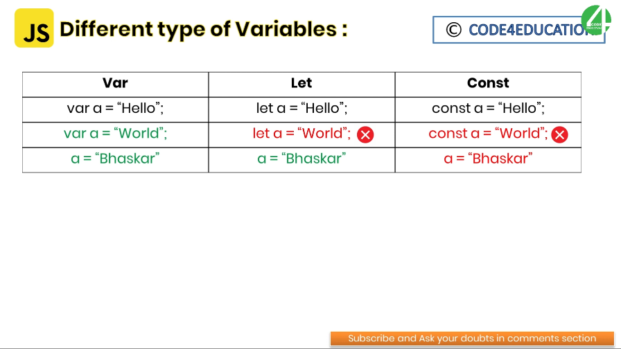
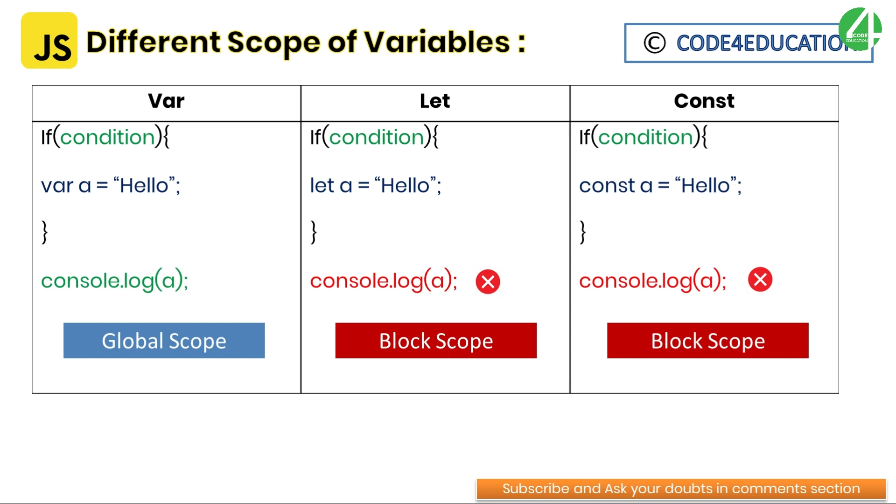

This keyword is used to declare variable globally. If you used this keyword to declare variable then the variable can accessible globally and changeable also. It is good for a short length of codes, if the codes get huge then you will get confused.
This keyword is used to declare variable locally. If you used this keyword to declare variable then the variable can accessible locally and it is changeable as well. It is good if the code gets huge.
This keyword is used to declare variable locally. If you use this keyword to declare a variable then the variable will only accessible within that block simiar to the variable defined by using let and difference between let and const is that the variables declared using const values can't be reassigned. So we should assign the value while declaring the variable.
 